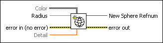
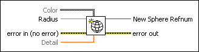

Create Sphere VI
Owning Palette: Geometries VIs
Requires: Full Development System
Applies a sphere geometry to a three-dimensional object that appears in a 3D scene.

 Add to the block diagram Add to the block diagram |
 Find on the palette Find on the palette |
Owning Palette: Geometries VIs
Requires: Full Development System
Applies a sphere geometry to a three-dimensional object that appears in a 3D scene.

| Add to the block diagram |
Find on the palette |
 |
Color specifies the color of the object in RGBA format. Color accepts a cluster of numeric values 0 through 1, where 0 represents the absence of the red, green, or blue color and 1 represents a full saturation of the color. The alpha value indicates the transparency of the red, green, and blue colors.
| ||||||||
 |
Radius specifies the radius of the object. | ||||||||
 |
error in describes error conditions that occur before this node runs. This input provides standard error in functionality. | ||||||||
|
Detail specifies the number of vertices to use in drawing the object. A higher detail value produces a better approximation of the geometry. The default is 1. | ||||||||
 |
New Sphere Refnum is the reference to the created geometry. | ||||||||
 |
error out contains error information. This output provides standard error out functionality. |
Refer to the 3D Model of Solar System VI in the labview\examples\Graphics and Sound\3D Picture Control directory for an example of using the Create Sphere VI.
 Open example Find related examples
Open example Find related examples